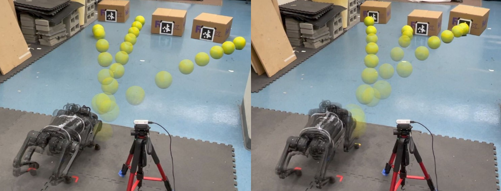

Yandong Ji (1) Zhongyu Li (1) Yinan Sun (1) Xue Bin Peng (1) Sergey Levine (1) Glen Berseth (2) Koushil Sreenath (1)
(1) University of California, Berkeley(2) Université de Montréal, Mila

Abstract
We address the problem of enabling quadrupedal robots to perform precise shooting
skills in the real world using reinforcement learning. Developing algorithms to
enable a legged robot to shoot a soccer ball to a given target is a challenging
problem that combines robot motion control and planning into one task. To solve
this problem, we need to consider the dynamics limitation and motion stability
during the control of a dynamic legged robot. Moreover, we need to consider motion
planning to shoot the hard-to-model deformable ball rolling on the ground with
uncertain friction to a desired location. In this paper, we propose a hierarchical
framework that leverages deep reinforcement learning to train (a) a robust motion
control policy that can track arbitrary motions and (b) a planning policy to decide
the desired kicking motion to shoot a soccer ball to a target. We deploy the
proposed framework on an A1 quadrupedal robot and enable it to accurately shoot
the ball to random targets in the real world.
@article{
A1ShootingJi2022,
doi = {10.48550/ARXIV.2208.01160},
url = {https://arxiv.org/abs/2208.01160},
author = {Ji, Yandong and Li, Zhongyu and Sun, Yinan and Peng, Xue Bin and Levine, Sergey and Berseth, Glen and Sreenath, Koushil},
keywords = {Robotics (cs.RO), Artificial Intelligence (cs.AI), Systems and Control (eess.SY), FOS: Computer and information sciences, FOS: Computer and information sciences, FOS: Electrical engineering, electronic engineering, information engineering, FOS: Electrical engineering, electronic engineering, information engineering},
title = {Hierarchical Reinforcement Learning for Precise Soccer Shooting Skills using a Quadrupedal Robot},
publisher = {arXiv},
year = {2022},
copyright = {arXiv.org perpetual, non-exclusive license}
}